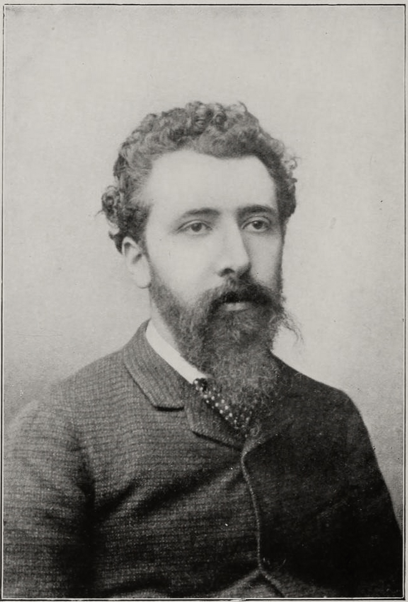
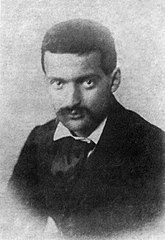

Vincent van Gogh (1853–1890) was a Dutch Post-Impressionist painter famous for his vibrant colors and emotional brushwork
in works like Starry Night and Sunflowers.
Despite a short, troubled life with little success, his art later became hugely influential in modern art.

Georges Seraut
Georges Seurat (1859–1891) was a French painter who pioneered Pointillism, a technique using tiny dots of color to create detailed images.
His most famous work is A Sunday on La Grande Jatte, which had a major impact on modern art.

Paul Cezanne
Paul Cézanne (1839–1906) was a French Post-Impressionist whose innovative use of form and color
in works like Mont Sainte-Victoire helped pave the way for modern art and influenced movements like Cubism.